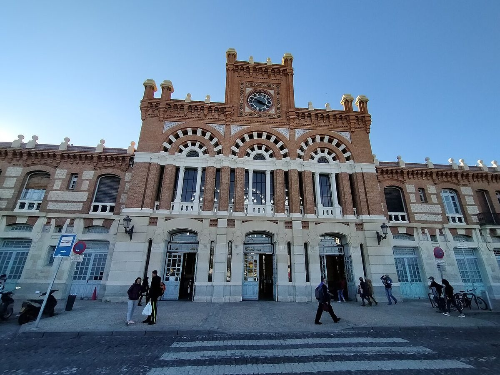

Fronteras que votan distinto · Elecciones: 2019-2023
Ontígola, uno de los 36 municipios donde ganó Vox
Ontígola, a 5,8 kilómetros de Aranjuez, es uno de los 36 municipios de España donde Vox ganó el 23J
Por Nacho G. del Álamo ·
El 23 de julio de 2023, Vox fue la lista más votada en Ontígola (Toledo), con el 30,3 %. En Aranjuez, al otro lado del límite con la Comunidad de Madrid, sacó el 17,5 % y ganó el PP. Los dos municipios tienen casi la misma renta (20.735 y 21.662 euros). Ontígola es el segundo municipio más poblado de los 36 que ganó Vox en esas elecciones.
Dato: verificable y reproducible
Ver Ontígola en el mapa →Ver Aranjuez en el mapa →
La pregunta: ¿Por qué Vox gana a un lado del límite entre Madrid y Castilla-La Mancha y no al otro?
Una victoria rara
DatoVox ganó el 23J en 36 de los 8.131 municipios de España, y solo 4 de ellos superan los 1.000 habitantes. El mayor es Pioz (Guadalajara); el segundo, Ontígola, con 4.993 habitantes.
DatoEn Ontígola, Vox sacó el 30,3 %, por delante del PSOE (27,6 %) y del PP (26,2 %). En el conjunto de la provincia de Toledo, Vox se quedó en el 19,7 %; en la de Madrid, en el 14,0 %; en España, en el 12,4 %.
Al otro lado del límite
DatoAranjuez, con 61.503 habitantes, está a 5,8 kilómetros. Su renta es casi la misma (21.662 euros por unidad de consumo frente a 20.735), y sus vecinos son algo mayores (41,5 años de edad media frente a 38,9). Allí ganó el PP con el 36,6 % y Vox sacó el 17,5 %.
DatoEl modelo de esta serie para el voto a Vox, que tiene en cuenta renta, edad, paro, estudios, población extranjera, tamaño y provincia, predice un 21,2 % para Ontígola: Vox sacó 9,1 puntos más. Para Aranjuez predice un 15,0 %.
PatrónLa diferencia no está tanto en el voto a la derecha en su conjunto como en su reparto. PP, Vox y Cs sumaron el 56,4 % en Ontígola y el 54,1 % en Aranjuez; en Ontígola, Vox sacó más que el PP.
Desde 2019
DatoNo es la primera vez. En noviembre de 2019, Vox sacó en Ontígola el 31,9 % y en Aranjuez, el 23,5 %. En abril de 2019, el 22,8 % y el 16,5 %.
DatoEn las municipales de mayo de 2023 Vox sacó en Ontígola el 30,7 %, pero la lista más votada fue la del PSOE, con el 42,5 %.
La Sagra y la frontera madrileña
DatoLos municipios toledanos de la Sagra, cerca del límite con Madrid, dan a Vox bastante más que la media de España (12,4 %): Yeles (26,6 %), Esquivias (17,6 %), Seseña (25,3 %), Illescas (24,0 %), Borox (22,9 %). Al otro lado, Valdemoro dio a Vox el 20,2 % y Ciempozuelos, el 18,9 %.
Sobre el terreno
DatoOntígola ha multiplicado su población en lo que va de siglo: el padrón del INE le contaba 1.250 vecinos en 2000 y 5.101 en 2025, y su ayuntamiento recordaba en 2022 que una década antes apenas llegaba a 3.000. Fuentes: 1, 2
DatoEl Mar de Ontígola, el humedal que da nombre al pueblo, está en término de Aranjuez: Felipe II mandó crearlo en 1552 para atraer aves de cetrería, acabó abasteciendo de agua los jardines del Real Sitio y hoy es reserva natural. Fuentes: 1, 2
Lo que no sabemos
- HipótesisPor qué. El crecimiento de población de estos municipios toledanos y la llegada de vecinos desde la Comunidad de Madrid son hipótesis habituales; esta pieza no tiene datos de procedencia de los nuevos residentes ni dos fuentes que las respalden.
Dato: verificable y reproducible. Patrón: relación descriptiva, sin causa. Hipótesis: explicación posible que aún no tiene dos fuentes independientes.
Los datos
| Municipio | Provincia | Vox | Vox previsto | PP | PSOE | Gana |
|---|---|---|---|---|---|---|
| Ontígola | Toledo | 30,3 | 21,2 | 26,2 | 27,6 | Vox |
| Aranjuez | Madrid | 17,5 | 15,0 | 36,6 | 30,1 | PP |
| Yeles | Toledo | 26,6 | 23,8 | 31,0 | 30,0 | PP |
| Esquivias | Toledo | 17,6 | 21,1 | 37,3 | 28,4 | PP |
| Seseña | Toledo | 25,3 | 23,7 | 32,7 | 26,9 | PP |
| Illescas | Toledo | 24,0 | 22,3 | 36,7 | 27,1 | PP |
| Borox | Toledo | 22,9 | 21,6 | 33,7 | 33,4 | PP |
| Ciempozuelos | Madrid | 18,9 | 16,9 | 32,0 | 32,0 | PSOE |
| Valdemoro | Madrid | 20,2 | 16,5 | 39,0 | 25,0 | PP |
Método y fuentes
- Qué se compara
- Ontígola y Aranjuez, separados por el límite entre Castilla-La Mancha y la Comunidad de Madrid, y siete municipios cercanos a los dos lados.
- Límites
- Ontígola tiene menos de 5.000 habitantes: unos cientos de votos mueven varios puntos. El modelo no es una explicación. Distancia entre centroides de los términos municipales.
- Metodología completa
- Cómo se calculan los porcentajes, el modelo, los gemelos y los escaños
- Fuentes
- Ministerio del Interior, resultados electorales por mesa (Infoelectoral). Congreso 2004-2023 vía pollspaindata, commit ee5ecda; municipales 2007-2023 de los ficheros de Infoelectoral
- INE, Atlas de Distribución de Renta de los Hogares 2023 (renta, edad, población), vía ineAtlas.data
- INE, Censo de Población y Viviendas 2021 (estudios, paro, extranjeros)
- Autoría
- Nacho G. del Álamo
- Revisión de datos y texto
- Nacho G. del Álamo, 7 de octubre de 2026
- Publicado · actualizado
- 7 de octubre de 2026 · 7 de octubre de 2026
- Correcciones
- Ninguna. Historial del Atlas
Sigue leyendo
- Fronteras que votan distintoSant Cugat y Badia: 5,4 kilómetros, 23 puntos
- Fronteras que votan distintoDos orillas de la ría, dos votos
- Voto dobleEn las europeas, la brecha entre ricos y pobres se dispara
Todas las piezas de «Fronteras que votan distinto» · Todo el Atlas